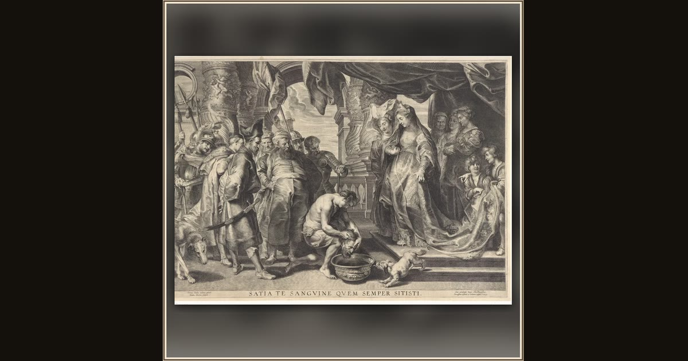

Wraak van Tomyris
Paulus Pontius, after painting by Peter Paul Rubens · 1630 · rijksmuseum
Tomyris watches a man lower Cyrus's severed head into a basin; the print depicts her promise to give him his fill of blood after their battle (1.214.5) Explore its place in Herodotus's Histories, Book I, chapter 705.